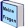
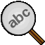

Die Toolbar besteht aus einer Reihen von kleinen Bildchen (Icons) und bietet damit den direkten Zugriff auf eine Reihe von Programm-Funktionen. Wenn man den Mauszeiger über ein Bildchen stellt, wird eine Kurzbeschreibung der Funktion angezeigt.
Klicke einfach auf das gewünschte Element um die Funktion auszuführen
 Kapitel- und Ausbildungsübersicht
Kapitel- und Ausbildungsübersicht
 einen Fragebogen-Durchlauf starten
einen Fragebogen-Durchlauf starten
 den laufenden Fragebogen abbrechen
den laufenden Fragebogen abbrechen
 die letzte Fragebogen-Auswertung anzeigen
die letzte Fragebogen-Auswertung anzeigen
 Unsichere Fragen wiederholen
Unsichere Fragen wiederholen
 den Dialog Einstellungen aufrufen
den Dialog Einstellungen aufrufen
Einzelne Kapitel listen
Manuelle Auswahl erstellen/bearbeiten
 Zeigt die erste Seite an
Zeigt die erste Seite an
 Eine Seite zurück blättern
Eine Seite zurück blättern
 Eine Seite vor blättern
Eine Seite vor blättern
Suche
 Wechsel zur Hilfe-Seite/Dokumentation
Wechsel zur Hilfe-Seite/Dokumentation
Je nach Programmstatus sind einzelne oder mehrere Elemente der Toolbar deaktiviert. Dieses Element wird dann dunkelgrau dargestellt.
Ein Beispiel ist das Element  Fragebogen abbrechen:
Fragebogen abbrechen:
Während des Durcharbeitens eines Fragebogens wird die gesamte Toolbar (bis auf das Abbrechen-Symbol) deaktivert.
Stand: 12. Nov. 2012